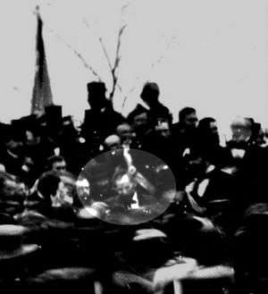

|
When plans were being made for the dedication of the
Gettysburg National Cemetery, the committee decided to
invite the Hon. Edward Everett to give the main address.
This seemed like the natural choice; a former member of the
House of Representatives, Everett was nearing the end of a
long, productive life. He had at one time served Governor of
Massachusetts, U.S. Minister to Great Britain, President of
Harvard, U.S. Senator and Secretary of State. He was
considered the foremost orator of his day, and he accepted
the invitation to speak at Gettysburg.
|

This is the only confirmed photo of Lincoln at Gettysburg (the president
is highlighted).
|
It wasn't until November 2--less than 3 weeks before the
dedication--that Lincoln was invited to give "a few
appropriate remarks" at the dedication. Although heavily
taxed by the responsibilities of his office, Lincoln too
agreed to be present at the dedication.
Lincoln traveled to Gettysburg on November 18, 1863. He did
not write the Gettysburg Address on the back of an envelope
as he rode, and this is one of the enduring myths
surrounding the event. Lincoln was a careful, thoughtful
man who never allowed any public statement to be committed
to the record without the utmost consideration. The
dedication of the cemetery was an important event, and
Lincoln worked hard on the speech in the days before coming
to Gettysburg.
Lincoln's Gettysburg Address was- more than a speech to
dedicate the cemetery. It was also an eloquent statement of
Lincoln's views on government and on why the war was being
fought. The American government, said Lincoln, was founded
on the proposition (proposal) that all men are created
equal. The war, lie stated, was an attempt to save the
government that embodied that ideal. The sacrifice of the
Gettysburg dead should make Americans rededicate themselves
to preserving the nation for which those heroes died. This
simple message explained why Lincoln was willing to put the
country--and himself--through the agony of civil war.
Many of Lincoln's listeners, though surprised by the brevity
of his talk, knew that the Gettysburg Address was a great
speech. As they, along with the rest of the country, had
the chance to read the speech again and again it soon became
evident that these words would live in history.
Source: Megan Quinn for the History 139A website
|